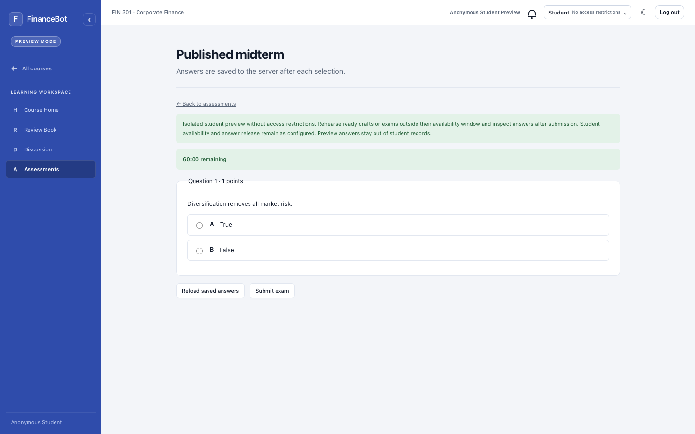
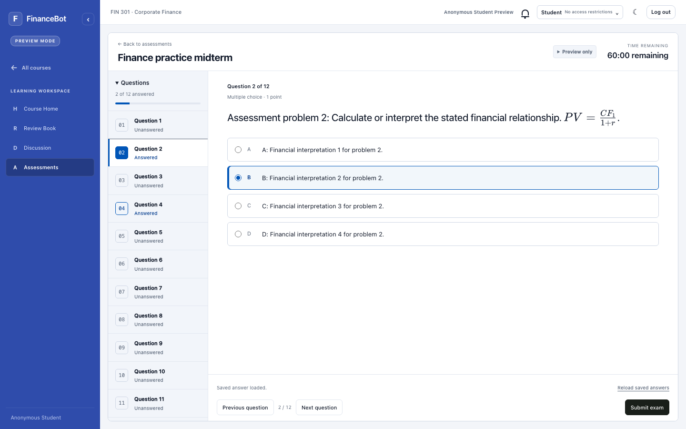
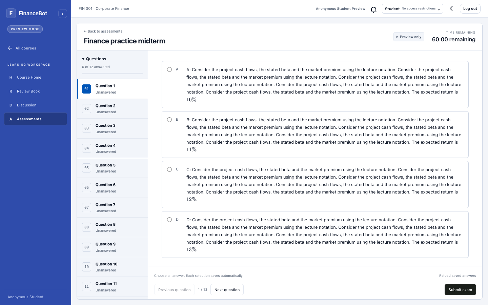
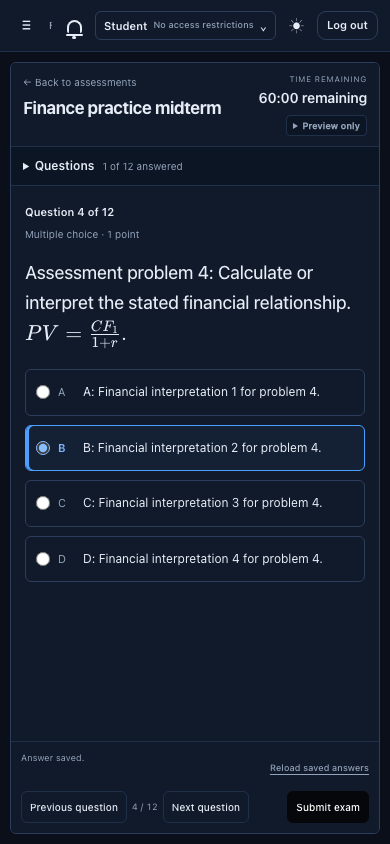
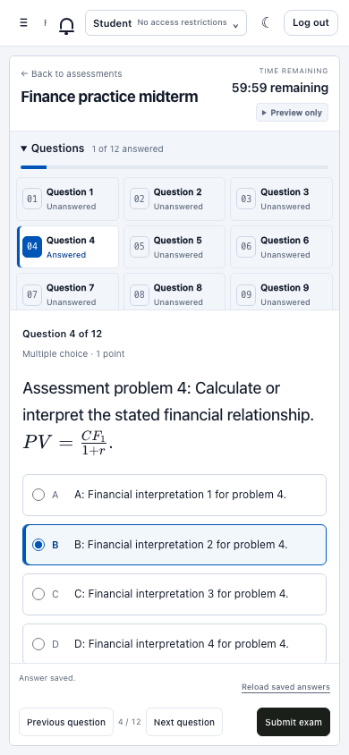
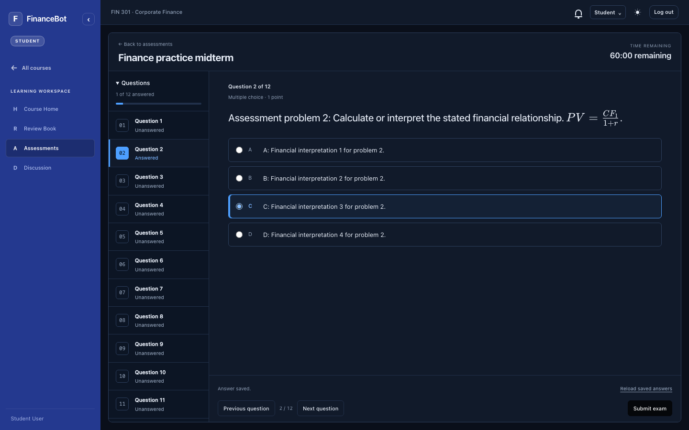

Latest update: exam navigation lock and close / reload submission
Implemented in the actual Student and Preview pages
- Compact question navigator with answered / unanswered states.
- Single-question reading area with independent scrolling.
- Persistent timer, answer-save status, Previous / Next and Submit.
- Collapsed Preview details and a mobile question navigator.
- Server-confirmed selections, recovery and withheld correctness are preserved.
These screenshots show compiled production UI with synthetic intercepted API fixtures, including a 12-question paper. They demonstrate the layout and tested workflows, not a live course or measured question quality. No backend behavior or model calls were changed for this redesign.
View the previous sitting layout


Desktop exam workspace
One question at a time, confirmed answer progress and a compact timer. The blue rail matches the existing Student workspace.

Long question, fixed controls
Question text and options scroll independently. Time remaining and the navigation / submission footer stay in view.

Mobile dark appearance
The question navigator starts collapsed and closes after selection. Answer status and actions remain visible.

Mobile question navigator
Students can jump to any answered or unanswered question. Navigation never changes saved answers.

Desktop dark appearance
Confirmed selections use the existing blue accent. Correctness stays hidden until submission and permitted release.
